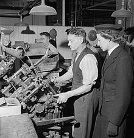

Historia de la empresa
La empresa que fue creada en 1882, lleva cosido, a su nombre un adjetivo que no muchos pueden ostentar: Reputación. Una reputación de artesanía, garantía, seguridad, innovación y calidad.
Las raíces de Calzados Diw las encontramos en 1882, cuando en la población de La Vall d´Uixó, provincia de Castellón, algunos maestros artesanos expertos en el tratamiento del cuero empezaron a aplicar sus conocimientos en la fabricación de calzado masculino de estilo militar. Las mejores botas tácticas del mercado se fabrican desde entonces en esta población aportando toda la experiencia de conocimiento en la confección a un calzado que necesita estar bien hecho.